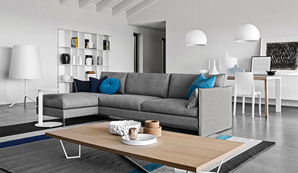
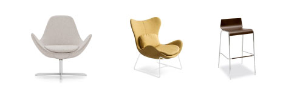
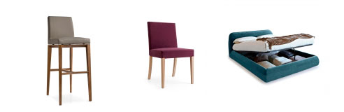
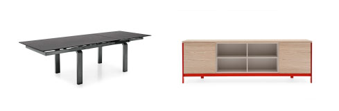

<!DOCTYPE html><html lang="ru"><head><meta charset="utf-8"><meta http-equiv="X-UA-Compatible" content="IE=edge,chrome=1"><meta name="keywords" content=""><meta name="description" content=""><meta name="viewport" content="width=device-width, initial-scale=1.0"><title>DolceVita</title><link href="https://fonts.googleapis.com/css?family=Roboto" rel="stylesheet"><link href="./style/partials/font-awesome/font-awesome.min.css" rel="stylesheet"><link href="./style/partials/bootstrap/bootstrap.min.css" rel="stylesheet"><link href="./style/partials/fancybox/jquery.fancybox.css" rel="stylesheet"><link href="./style/partials/lightslider/lightslider.min.css" rel="stylesheet"><link href="./style/partials/animate-css/animate.min.css" rel="stylesheet"><link href="./style/partials/reset/reset.css" rel="stylesheet"><link href="./style/main.css" rel="stylesheet"></head></html><body><section class="calligaris"><div class="container"><div class="row"><div class="col-xs-12"><div class="calligaris__content clearfix"><div class="calligaris__apartments"></div><div class="calligaris__env clearfix"><div class="col-xs-12 col-sm-8"><h2>Calligaris</h2><ul class="apartments"><li data-thumb="img/calligaris-room.jpg" data-src="img/calligaris-room.jpg" class="apartments__item"></li><li data-thumb="img/calligaris-apartments_img1.jpg" data-src="img/calligaris-apartments_img1.jpg" class="apartments__item"></li><li data-thumb="img/calligaris-apartments_img2.jpg" data-src="img/calligaris-apartments_img2.jpg" class="apartments__item"></li><li data-thumb="img/calligaris-apartments_img3.jpg" data-src="img/calligaris-apartments_img3.jpg" class="apartments__item"></li></ul></div><div class="col-xs-12 col-sm-4"><div class="calligaris__info"><div class="info"><div class="info__basic"><strong>Основная информация:</strong><p>Страна<span>Италия</span></p><p>Сайт<span> <a href="http://www.calligaris.biz">http://www.calligaris.biz</a></span></p><p>Направление<span>Столы и стулья</span></p></div><div class="info__description"><strong>Описание:</strong><p><b>Итальянская фабрика Calligaris </b>создана в 1923 году. На рынке заняла свою нишу в области производства современной и функциональной мебели. </p><p> 
Фабрика Калигарис отличается особым качеством производства столов и стульев. Столы трансформеры известны во всем мире, что уже говорить про качество и дизайнерские решения стульев. Более 800 моделей стульев и столов, а так же офисной мебели, в том числе компьютерные и письменные  столы, кресла. </p><p>Итальянская фирма Calligaris так же работает с аксессуарами для дома: вешалки, журнальные столы, витрины, зеркала, комоды, модульные системы, консоли. Фирма Calligaris специализируется на декоре для Вашего дома. </p><p> 
Фабрика Калигарис Украина представлена во многих городах, так же есть в салоне <br><b>«Дольче Вита» в Хмельницком.</b></p><p class="btn-env"><a href="form-page.html" data-fancybox-type="iframe" class="popup-page btn btn-order">Заказать просмотр</a></p></div></div></div></div></div></div></div><!-- Calligaris--></div></div></section><script src="./js/jquery/jquery-3.1.0.min.js"></script><script src="./js/lightslider/lightslider.min.js"></script><script src="./js/galleryslide.js"></script></body>